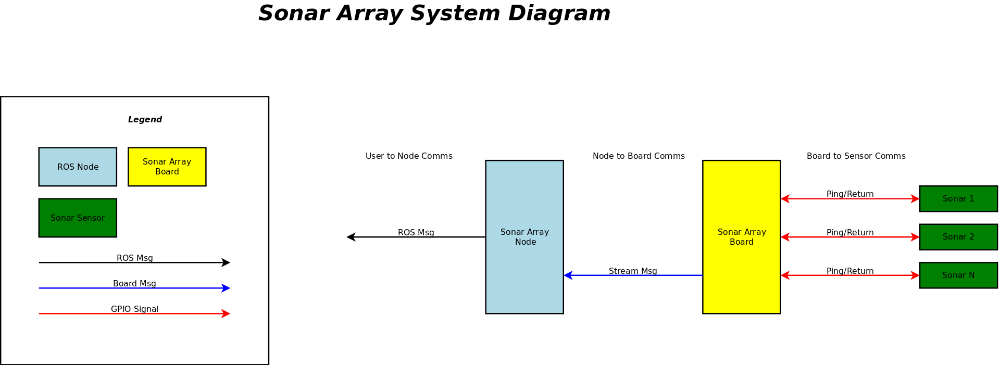
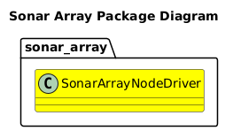
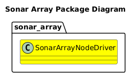

Sonar Array
TOC
Overview
The Sonar Array project is designed to study and create an advanced sensor array that can use COTS sonar sensors to build a map of a robot's surroundings.
The Sonar Array will be composed of the following:
- Multiple Parallax Ping Ultrasonic Distance Sensors.
- A mounting hardware design to provide the following mounting options:
- A fully contained Sonar Array
- Hardware designed to mount sonar sensors to specific locations on your robot
- Software Driver running on a Board to use the Sonar Sensors, along with a ROS Node that can communicate with the Board that publishes this data over ROS.
- Visualization tools used to see the Sonar Array in action
Project Plan
| Status | Epic |
|---|---|
| STARTED | Sonar Sensor Characterization |
| STARTED | Sonar Array Driver |
| NOT STARTED | Sonar Array Hardware Design & Build |
| NOT STARTED | Sonar Array Simulation |
| NOT STARTED | Sonar Array Driver Optimization |
| NOT STARTED | RVIZ Sonar Array Plugin |
| NOT STARTED | Occupancy Grid |
| NOT STARTED | Sonar Array Driver Scan/Ping Pattern Automation |

@ref doc/Boards/Boards.md "Boards"
@ref doc/Communication/Communication.md "Communication"
@ref doc/Sensors/Sensors.md "Sensors"
@ref doc/Nodes/Nodes.md "Nodes"
Sonar Array Package
 
